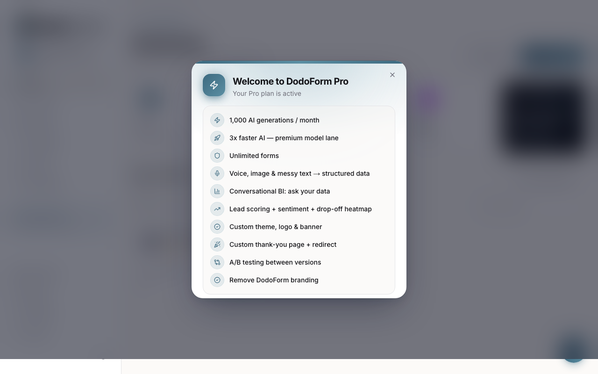
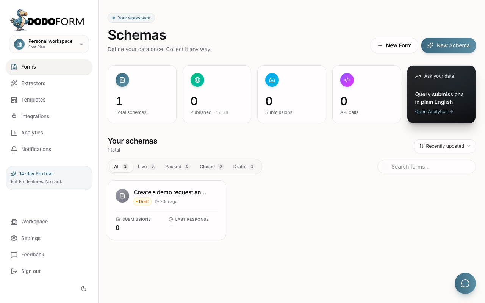
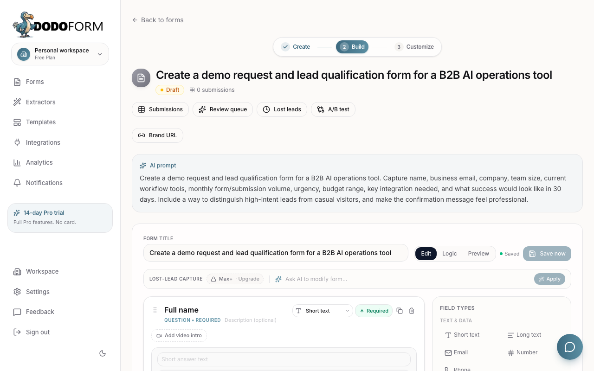
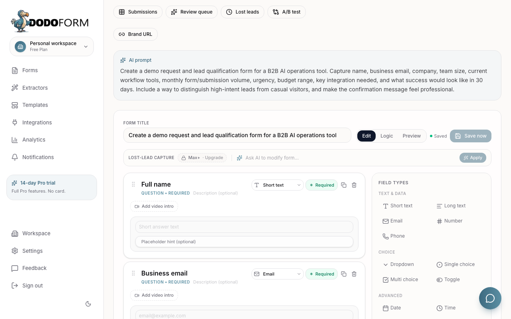
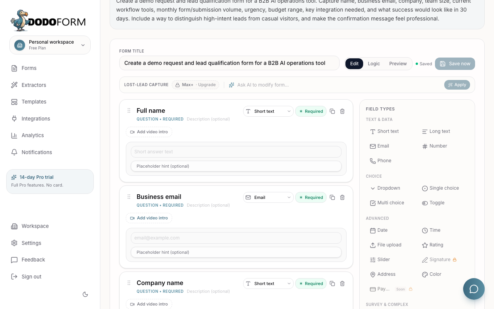
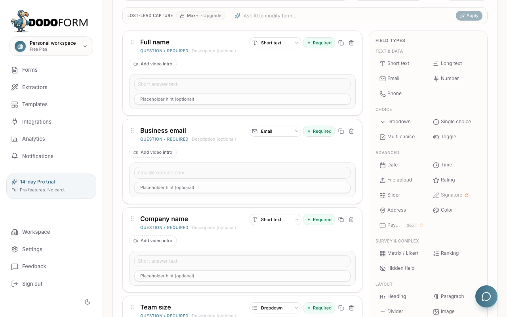
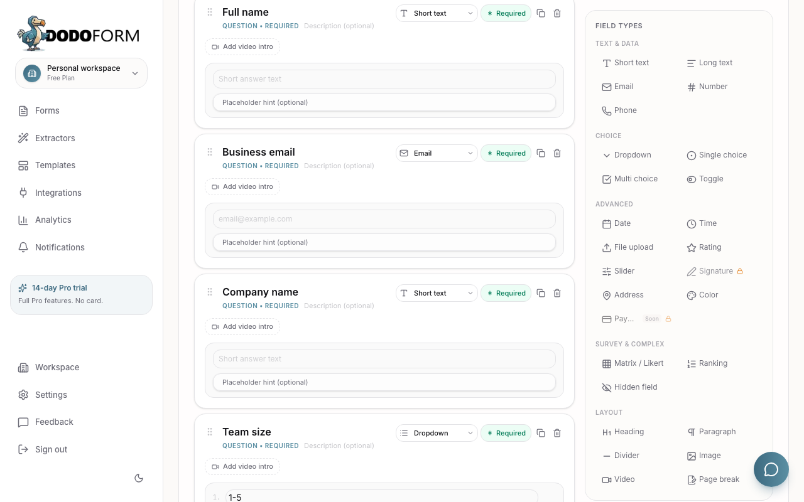

Think aloud: This Pro popup is actually relevant — lead scoring and BI are exactly my RevOps lane — but I need the dashboard underneath first.

Think aloud: I’ve got a draft already, and the title matches my demo intake. Now I need the editor, not dashboard counts, to see if the AI gave me usable lead signals.

Think aloud: This is already better than a blank builder: I see required name and email, plus review queue and lost leads. I need the rest of the fields before I trust it for routing.

Think aloud: Name and business email are correct basics, and autosave is clear. I need to see if it created urgency, budget, integrations, and success outcome for prioritizing leads.

Think aloud: The editor has the right controls and autosave, but I still only see the top of the form. I need the qualification fields before this earns trust for RevOps follow-up.

Think aloud: Team size is showing now, good. I still need the lead-intent signals like urgency and budget, because that is what helps my team route demos fast.

Think aloud: Team size is the first real qualifier, but I need the rest: tools, volume, urgency, budget, integrations. If those appear without me hand-building, that is a strong signal.
Think aloud: I have enough evidence now: the workflow works once, but repeating the same action would not add new product evidence. Decision: try.